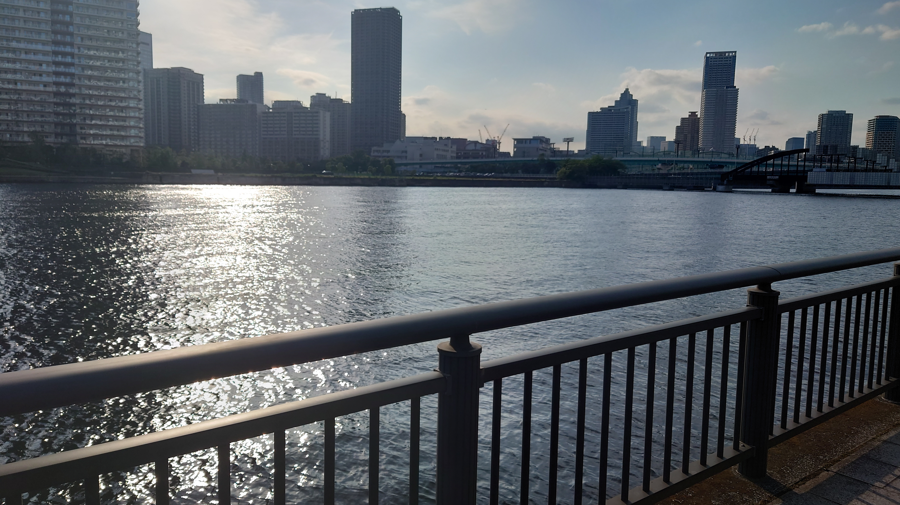
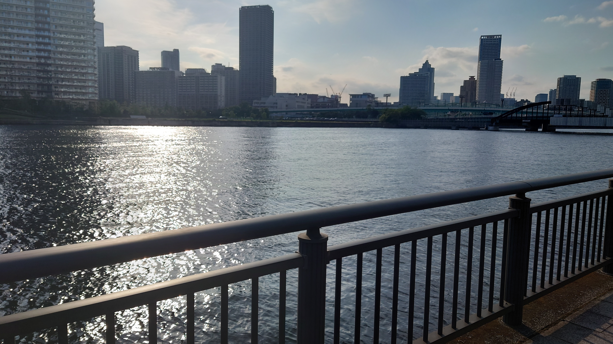

こんにちは、ザクザク食感です。
朝起きたら頭が痛かった
カーテンを開けて天気を確認したら曇りだった。うわ～低気圧のせいだ、と思った。
このまま二度寝したかったが、今日は出社日なので半泣きで出かける準備をした。
前日の夜にお風呂に入っておくと朝のハードルがぐっと下がることに最近気づいた。朝にシャワーを浴びると無理やり目が覚めるから一石二鳥だと思っていたが、心臓の鼓動が安定しなくなるのでやらない方がいい
頑張って出社したら遅刻した。
厳密には遅刻ではないけれど、回線の不調で朝会のMeetに繋がらなくて遅刻になってしまった。
遅刻者面談も「まぁどんまいです笑」みたいな感じでヌルっと終わった。この時点で今日は良くない日であることを確信した（伏線みたいな書き方してるけど、この後別に何もないです）。
お昼に丸亀製麺に行った。
冷たいうどんを、例えば「冷ぶっかけ並で！」みたいな感じで注文してくれるお客さんにバイト時代感謝していたことを思い出した。
冷たいうどんは冷水に、温かいうどんはお湯につける工程があるので、一番先に知りたい情報は注文したいうどんの温度です！
賄いでうどんを食べていた頃は飽き飽きしていたけれど、改めて食べると美味しかった。
でも賄いは90円で好きなだけ食べていいルールだったので、お金を出して食べるのが惜しい気持ちもある。
終業前にオフィスを脱走して海を見に行った。
外は完全に晴れていたが、頭痛が良くなる気配は全くない。気圧が原因じゃないとしたら風邪以外に考えられないくらいには頭が痛い。
何か頭に刺さっているような、孫悟空の頭の輪で締め付けられているような痛みがずっとある。
こういうとき、首を思いっきりひねって鼻血を出すイメージが湧く。頭に刺さっている芯を折って鼻血を出して楽になりたい！と思う。自分ができる限り首をひねってみても芯が折れる気配は全くない。早く楽にしてくれ～！！！
太陽や月が僕をずっと追いかけてくることがいまだに腑に落ちない。
どちらも大きすぎて遠すぎるからどこから見ても追いかけてきているように見える理屈はわかるけど、他の人の目で見ても同じような振る舞いをすることが不思議だと思う。
水面に反射した太陽光が僕を追いかけてくる！
 

さっきまで橋のふもとにあったはずの光がずっと僕の目の前にあって、こういうもんだっけ、と思った。
原理的には鏡と同じなんだろうけど、人によって見え方が違うことを考えたらなんだかよくわからなくなってきた。これがクオリアですか？と思ったけどたぶん違う。
即タイガキングダムして帰宅し、さっさと寝ればいいのに絵と文字をかいている。
僕はこういう負の衝動があるときしか何も作れないのかもしれない
幸せになるのをいつも怖がっていたのに……
それでは、さようなら。